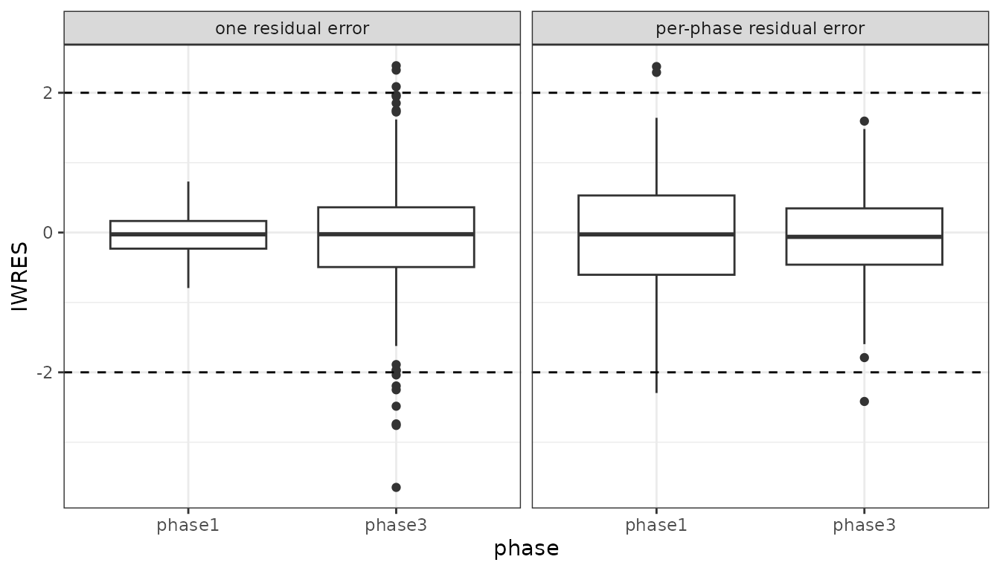

Fitting separate phase 1 and phase 3 residual error
2026-09-22
Source:vignettes/articles/phase-residual-error.Rmd
phase-residual-error.RmdOne structural model, two residual error models
A pooled population PK analysis usually combines studies that were not run under the same conditions. Phase 1 contributes rich profiles from healthy volunteers at one site, with a validated assay and controlled sample handling. Phase 3 contributes sparse samples from patients across many sites, with nominal rather than recorded times and more variable sample handling.
The drug does not change between the phases, so the structural model does not either. What changes is the noise around the prediction. Forcing one residual error model onto the pooled data splits the difference: it overstates the noise on the phase 1 records and understates it on the phase 3 ones. Because the residual variance is what weights each observation in the objective function, that compromise leaks into the structural and random-effect estimates too.
rxode2 lets one prediction carry more than one residual
error model, each named with | <name>:
library(nlmixr2)
library(ggplot2)
pkPhase <- function() {
ini({
tka <- 0.45; label("Log Ka")
tcl <- 1; label("Log Cl")
tv <- 3.45; label("Log V")
eta.ka ~ 0.6
eta.cl ~ 0.3
eta.v ~ 0.1
phase1.sd <- 0.3; label("Phase 1 additive error (mg/L)")
phase3.sd <- 0.3; label("Phase 3 additive error (mg/L)")
})
model({
ka <- exp(tka + eta.ka)
cl <- exp(tcl + eta.cl)
v <- exp(tv + eta.v)
d/dt(depot) <- -ka * depot
d/dt(center) <- ka * depot - cl / v * center
cp <- center / v
cp ~ add(phase1.sd) | phase1
cp ~ add(phase3.sd) | phase3
})
}There is one cp and one set of ODEs. Which standard
deviation applies is decided per observation record, by the compartment
(or dvid) that record names:
pkPhase()$multipleEndpoint
#> variable cmt dvid*
#> 1 cp ~ … cmt='phase1' or cmt=3 dvid='phase1' or dvid=1
#> 2 cp ~ … cmt='phase3' or cmt=4 dvid='phase3' or dvid=2This is the estimation companion to the rxode2 article
Separating
phase 1 and phase 3 residual error, which covers the same model from
the simulation side.
A pooled dataset
To make the point visible we simulate a pooled analysis dataset where
the two phases really do have different residual error – phase 1 at
0.15 mg/L, phase 3 at 0.8 mg/L – and then try
to recover it.
sim <- pkPhase() |>
ini(phase1.sd = 0.15, phase3.sd = 0.8)
# phase 1: 12 subjects, rich sampling
ev1 <- et(amt=320, cmt="depot") |>
et(c(0.25, 0.5, 1, 2, 3, 4, 6, 8, 12, 16, 24), cmt="phase1")
# phase 3: 48 subjects, sparse sampling
ev3 <- et(amt=320, cmt="depot") |>
et(c(1, 4, 12, 24), cmt="phase3")
set.seed(42)
d1 <- rxSolve(sim, ev1, nSub=12, addDosing=TRUE, returnType="data.frame")
d3 <- rxSolve(sim, ev3, nSub=48, addDosing=TRUE, returnType="data.frame")
# label each study's observation records with its phase, and keep the
# subject ids distinct between the two
d1$dvid <- ifelse(d1$evid == 0, "phase1", NA_character_)
d3$dvid <- ifelse(d3$evid == 0, "phase3", NA_character_)
d3$sim.id <- d3$sim.id + max(d1$sim.id)
dat <- rbind(d1, d3)
dat$DV <- dat$sim
dat <- dat[, c("sim.id", "time", "amt", "evid", "DV", "dvid")]
names(dat) <- c("ID", "TIME", "AMT", "EVID", "DV", "dvid")
head(dat)
#> ID TIME AMT EVID DV dvid
#> 1 1 0.00 320 1 NA <NA>
#> 2 1 0.25 NA 0 2.050783 phase1
#> 3 1 0.50 NA 0 3.410563 phase1
#> 4 1 1.00 NA 0 4.697256 phase1
#> 5 1 2.00 NA 0 5.267174 phase1
#> 6 1 3.00 NA 0 4.995577 phase1
table(dat$dvid, useNA="no")
#>
#> phase1 phase3
#> 132 192The residual standard deviations really are different in this dataset:
c(phase1 = sd(d1$sim - d1$ipredSim, na.rm=TRUE),
phase3 = sd(d3$sim - d3$ipredSim, na.rm=TRUE))
#> phase1 phase3
#> 0.1679217 0.7474359The dvid column is what selects the endpoint. It can
equally be a cmt column, or the numeric dvid
that $multipleEndpoint lists; dosing records leave it
missing.
What one residual error model gives you
First fit the same structural model with a single additive error, on
the same data with the dvid column removed:
pkPooled <- function() {
ini({
tka <- 0.45; label("Log Ka")
tcl <- 1; label("Log Cl")
tv <- 3.45; label("Log V")
eta.ka ~ 0.6
eta.cl ~ 0.3
eta.v ~ 0.1
add.sd <- 0.3; label("Pooled additive error (mg/L)")
})
model({
ka <- exp(tka + eta.ka)
cl <- exp(tcl + eta.cl)
v <- exp(tv + eta.v)
d/dt(depot) <- -ka * depot
d/dt(center) <- ka * depot - cl / v * center
cp <- center / v
cp ~ add(add.sd)
})
}
datPooled <- dat[, names(dat) != "dvid"]
fitPooled := nlmixr2(pkPooled, datPooled, est="focei",
control=list(print=0))
fitPooled$parFixedDf["add.sd", c("Estimate", "SE", "Back-transformed")]
#> Estimate SE Back-transformed
#> add.sd 0.5160063 0.005750164 0.5160063The single estimate lands between the two truths. Nothing in the output says so – the fit converges and the parameter has a small standard error – but the conditional weighted residuals do:
resPooled <- as.data.frame(fitPooled)
resPooled$phase <- dat$dvid[dat$EVID == 0]
tapply(resPooled$IWRES, resPooled$phase, sd)
#> phase1 phase3
#> 0.3007890 0.9484509Individual weighted residuals should have about the same spread in
every stratum. Splitting them by phase shows they do not: phase 3
supplies most of the records, so it pulls the single add.sd
towards its own error and ends up reasonably weighted, while the phase 1
records – whose true error is five times smaller – are divided by a
standard deviation far too large for them and are effectively discounted
in the objective function.
Fitting both at once
The two-endpoint model needs no extra machinery – give
nlmixr2() the dataset with its dvid
column:
fitPhase := nlmixr2(pkPhase, dat, est="focei",
control=list(print=0))
print(fitPhase)
#> ── nlmixr² FOCEi (outer: bobyqa) ──
#>
#> OBJF AIC BIC Log-likelihood Condition#(Cov) Condition#(Cor)
#> FOCEi 272.1228 883.5949 913.8409 -433.7975 2616.107 139.7353
#>
#> ── Time (sec $time): ──
#>
#> setup optimize covariance preprocess postprocess table compress
#> elapsed 2.669604 0.7785523 1.506586 0.036 0.015 0.046 0.001
#> other
#> elapsed 0.1782578
#>
#> ── Population Parameters ($parFixed or $parFixedDf): ──
#>
#> Parameter Est. SE %RSE
#> tka Log Ka 0.317 0.105 33.3
#> tcl Log Cl 0.952 0.0760 7.99
#> tv Log V 3.51 0.0454 1.29
#> phase1.sd Phase 1 additive error (mg/L) 0.169 0.0146 8.64
#> phase3.sd Phase 3 additive error (mg/L) 0.841 0.0492 5.85
#> Back-transformed(95%CI) BSV(CV%) Shrink(SD)%
#> tka 1.37 (1.12, 1.69) 66.1 18.6
#> tcl 2.59 (2.23, 3.01) 60.6 6.72
#> tv 33.5 (30.7, 36.7) 33.5 10.5
#> phase1.sd 0.169 (0.140, 0.197)
#> phase3.sd 0.841 (0.744, 0.937)
#>
#> Covariance Type ($covMethod): r,s
#> Some strong fixed parameter correlations exist ($cor) :
#> cor:tcl,tka cor:tv,tka cor:phase1.sd,tka
#> -0.890 0.321 0.197
#> cor:phase3.sd,tka cor:om.eta.ka,tka cor:om.eta.cl,tka
#> 0.164 0.173 0.897
#> cor:om.eta.v,tka cor:tv,tcl cor:phase1.sd,tcl
#> 0.553 -0.329 -0.0826
#> cor:phase3.sd,tcl cor:om.eta.ka,tcl cor:om.eta.cl,tcl
#> -0.238 -0.0186 -0.701
#> cor:om.eta.v,tcl cor:phase1.sd,tv cor:phase3.sd,tv
#> -0.609 -0.0872 0.271
#> cor:om.eta.ka,tv cor:om.eta.cl,tv cor:om.eta.v,tv
#> 0.266 0.304 0.426
#> cor:phase3.sd,phase1.sd cor:om.eta.ka,phase1.sd cor:om.eta.cl,phase1.sd
#> 0.155 -0.0141 0.201
#> cor:om.eta.v,phase1.sd cor:om.eta.ka,phase3.sd cor:om.eta.cl,phase3.sd
#> 0.0555 0.209 0.247
#> cor:om.eta.v,phase3.sd cor:om.eta.cl,om.eta.ka cor:om.eta.v,om.eta.ka
#> 0.386 0.291 0.585
#> cor:om.eta.v,om.eta.cl
#> 0.514
#>
#>
#> No correlations in between subject variability (BSV) matrix
#> Full BSV covariance ($omega) or correlation ($omegaR; diagonals=SDs)
#> Distribution stats (mean/skewness/kurtosis/p-value) available in $shrink
#> Information about run found ($runInfo):
#> • gradient problems with covariance; see $scaleInfo
#> • using S matrix to calculate covariance, can check sandwich or R matrix with $covRS and $covR
#> • last objective function was not at minimum, possible problems in optimization
#> • ETAs were reset to zero during optimization; (Can control by foceiControl(resetEtaP=.))
#> • initial ETAs were nudged; (can control by foceiControl(etaNudge=., etaNudge2=))
#> Censoring ($censInformation): No censoring
#> Minimization message ($message):
#> Normal exit from bobyqa
#>
#> ── Fit Data (object is a modified tibble): ──
#> # A tibble: 324 × 24
#> ID TIME CMT DV PRED RES WRES IPRED IRES IWRES CPRED CRES
#> <fct> <dbl> <chr> <dbl> <dbl> <dbl> <dbl> <dbl> <dbl> <dbl> <dbl> <dbl>
#> 1 1 0.25 phase1 2.05 2.74 -0.693 -0.419 2.09 -0.0419 -0.249 2.68 -0.627
#> 2 1 0.5 phase1 3.41 4.64 -1.23 -0.502 3.39 0.0177 0.105 4.50 -1.09
#> 3 1 1 phase1 4.70 6.80 -2.10 -0.740 4.68 0.0222 0.132 6.53 -1.83
#> # ℹ 321 more rows
#> # ℹ 12 more variables: CWRES <dbl>, eta.ka <dbl>, eta.cl <dbl>, eta.v <dbl>,
#> # depot <dbl>, center <dbl>, ka <dbl>, cl <dbl>, v <dbl>, cp <dbl>,
#> # tad <dbl>, dosenum <int>
fitPhase$parFixedDf[c("phase1.sd", "phase3.sd"),
c("Estimate", "SE", "Back-transformed")]
#> Estimate SE Back-transformed
#> phase1.sd 0.1685220 0.01455884 0.1685220
#> phase3.sd 0.8406829 0.04921878 0.8406829Both standard deviations come back near the values used to simulate. The weighted residuals are now on a comparable scale in the two phases, instead of differing by a factor of three:
resPhase <- as.data.frame(fitPhase)
resPhase$phase <- dat$dvid[dat$EVID == 0]
tapply(resPhase$IWRES, resPhase$phase, sd)
#> phase1 phase3
#> 0.8518591 0.6725491Neither reaches exactly 1, and that is expected: the phase 3 design has four samples per subject against three random effects, so its individual estimates – and with them its IWRES – are shrunk. What matters is that the two strata are no longer weighted against each other.
d <- rbind(
data.frame(model="one residual error", phase=resPooled$phase, iwres=resPooled$IWRES),
data.frame(model="per-phase residual error", phase=resPhase$phase, iwres=resPhase$IWRES))
ggplot(d, aes(x=phase, y=iwres)) +
geom_boxplot() +
geom_hline(yintercept=c(-2, 2), linetype="dashed") +
facet_wrap(~model) +
ylab("IWRES") +
theme_bw()
The two fits are nested – the pooled model is the per-phase model with the two standard deviations constrained equal – so the objective functions are comparable on one degree of freedom:
Working with the model
Because both endpoints have the same left-hand side, model piping has to be told which one you mean. Name the condition:
pkPhase2 <- pkPhase() |>
model(cp ~ prop(phase3.prop) | phase3)
print(pkPhase2)
#> ── rxode2-based free-form 2-cmt ODE model ──────────────────────────────────────
#> ── Initalization: ──
#> Fixed Effects ($theta):
#> tka tcl tv phase1.sd phase3.prop
#> 0.45 1.00 3.45 0.30 1.00
#>
#> Omega ($omega):
#> eta.ka eta.cl eta.v
#> eta.ka 0.6 0.0 0.0
#> eta.cl 0.0 0.3 0.0
#> eta.v 0.0 0.0 0.1
#>
#> States ($state or $stateDf):
#> Compartment Number Compartment Name
#> 1 1 depot
#> 2 2 center
#> ── Multiple Endpoint Model ($multipleEndpoint): ──
#> variable cmt dvid*
#> 1 cp ~ … cmt='phase1' or cmt=3 dvid='phase1' or dvid=1
#> 2 cp ~ … cmt='phase3' or cmt=4 dvid='phase3' or dvid=2
#> * If dvids are outside this range, all dvids are re-numered sequentially, ie 1,7, 10 becomes 1,2,3 etc
#>
#> ── μ-referencing ($muRefTable): ──
#> theta eta level
#> 1 tka eta.ka id
#> 2 tcl eta.cl id
#> 3 tv eta.v id
#>
#> ── Model (Normalized Syntax): ──
#> function() {
#> ini({
#> tka <- 0.45
#> label("Log Ka")
#> tcl <- 1
#> label("Log Cl")
#> tv <- 3.45
#> label("Log V")
#> phase1.sd <- c(0, 0.3)
#> label("Phase 1 additive error (mg/L)")
#> phase3.prop <- c(0, 1)
#> eta.ka ~ 0.6
#> eta.cl ~ 0.3
#> eta.v ~ 0.1
#> })
#> model({
#> ka <- exp(tka + eta.ka)
#> cl <- exp(tcl + eta.cl)
#> v <- exp(tv + eta.v)
#> d/dt(depot) <- -ka * depot
#> d/dt(center) <- ka * depot - cl/v * center
#> cp <- center/v
#> cp ~ add(phase1.sd) | phase1
#> cp ~ prop(phase3.prop) | phase3
#> })
#> }Piping cp ~ prop(phase3.prop) with no
| phase3 reports the conditions to choose from rather than
guessing. The same name removes one endpoint:
pkPhase3 <- pkPhase2 |>
model(-phase3)
print(pkPhase3)
#> ── rxode2-based free-form 2-cmt ODE model ──────────────────────────────────────
#> ── Initalization: ──
#> Fixed Effects ($theta):
#> tka tcl tv phase1.sd
#> 0.45 1.00 3.45 0.30
#>
#> Omega ($omega):
#> eta.ka eta.cl eta.v
#> eta.ka 0.6 0.0 0.0
#> eta.cl 0.0 0.3 0.0
#> eta.v 0.0 0.0 0.1
#>
#> States ($state or $stateDf):
#> Compartment Number Compartment Name
#> 1 1 depot
#> 2 2 center
#> ── μ-referencing ($muRefTable): ──
#> theta eta level
#> 1 tka eta.ka id
#> 2 tcl eta.cl id
#> 3 tv eta.v id
#>
#> ── Model (Normalized Syntax): ──
#> function() {
#> ini({
#> tka <- 0.45
#> label("Log Ka")
#> tcl <- 1
#> label("Log Cl")
#> tv <- 3.45
#> label("Log V")
#> phase1.sd <- c(0, 0.3)
#> label("Phase 1 additive error (mg/L)")
#> eta.ka ~ 0.6
#> eta.cl ~ 0.3
#> eta.v ~ 0.1
#> })
#> model({
#> ka <- exp(tka + eta.ka)
#> cl <- exp(tcl + eta.cl)
#> v <- exp(tv + eta.v)
#> d/dt(depot) <- -ka * depot
#> d/dt(center) <- ka * depot - cl/v * center
#> cp <- center/v
#> cp ~ add(phase1.sd) | phase1
#> })
#> }Each endpoint has to be named. Two unnamed endpoints on one variable
(cp ~ add(a) written twice) are rejected when the model is
built, because no data record could tell them apart.
Transformations are per endpoint too, so
cp ~ lnorm(phase3.sd) | phase3 gives phase 3 a log-normal
residual while phase 1 stays additive, and the same is true of
boxCox(), propT(), combined1 and
the rest.
Notes
- The endpoints share
cp, so they share every structural parameter and every random effect. This is a residual-error split, not a separate model per phase; if the phases need different clearance or absorption, that belongs in a covariate onclorka. -
rxode2gives each of the shared endpoints its own generated variable (rx.cp.phase1,rx.cp.phase3, listed in$endpointAlias), which is why$predDf$vardiffers from the variable you typed. It is internal; you never write those lines and they do not appear in the fit. - The same pattern applies to any grouping the residual error depends on and the structural model does not: assay version, sample matrix (plasma versus dried blood spot), or site.
- All estimation methods handle it –
focei,saem,nlmeand thenlmfamily all read the per-endpoint residual parameters.